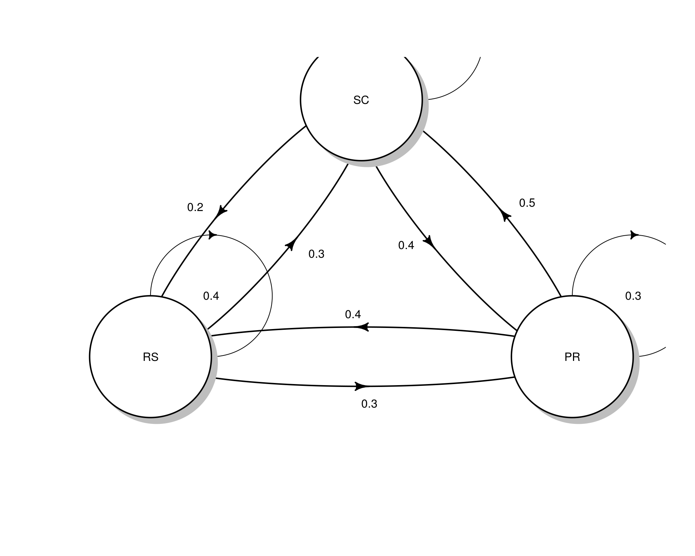
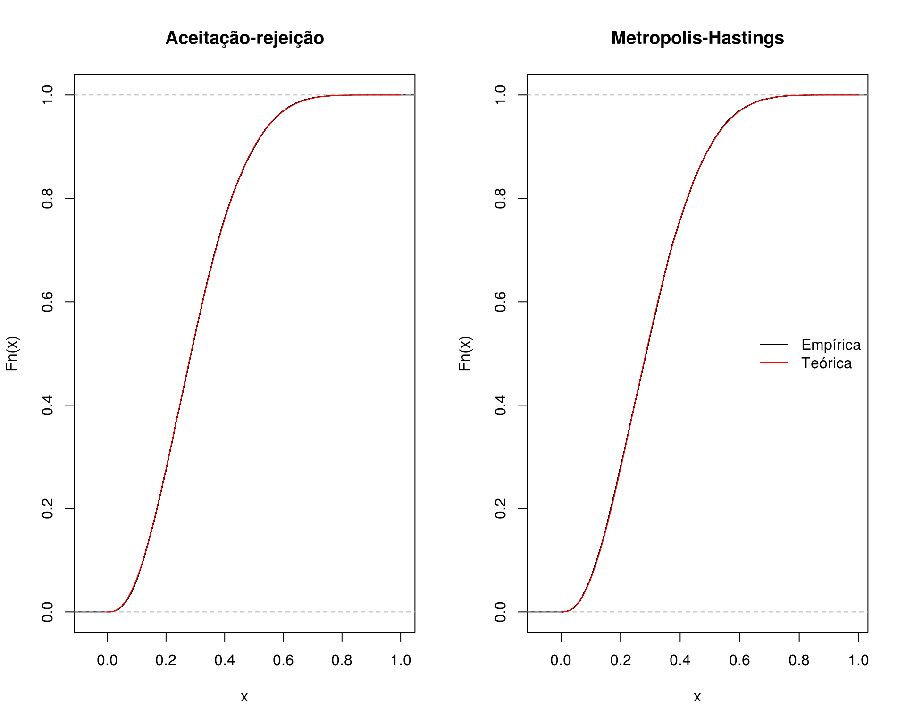
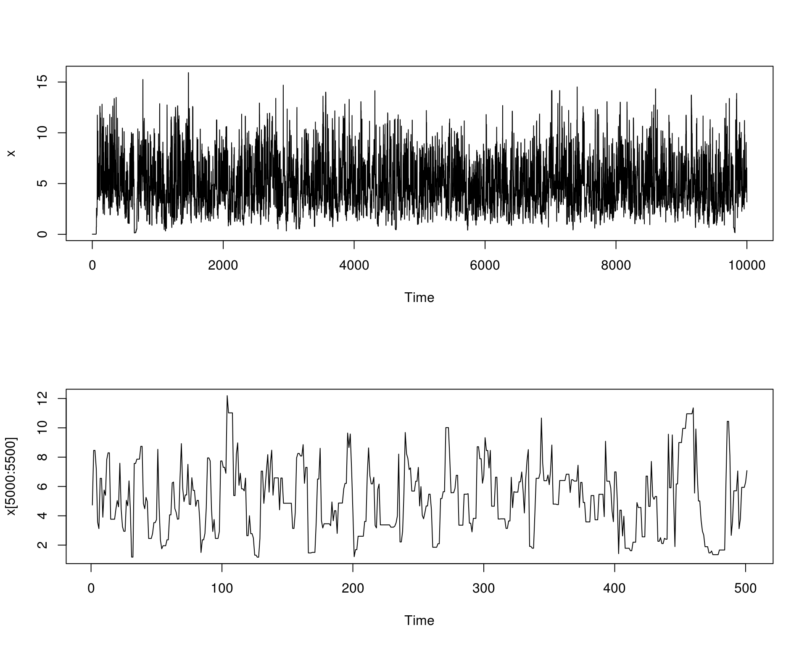
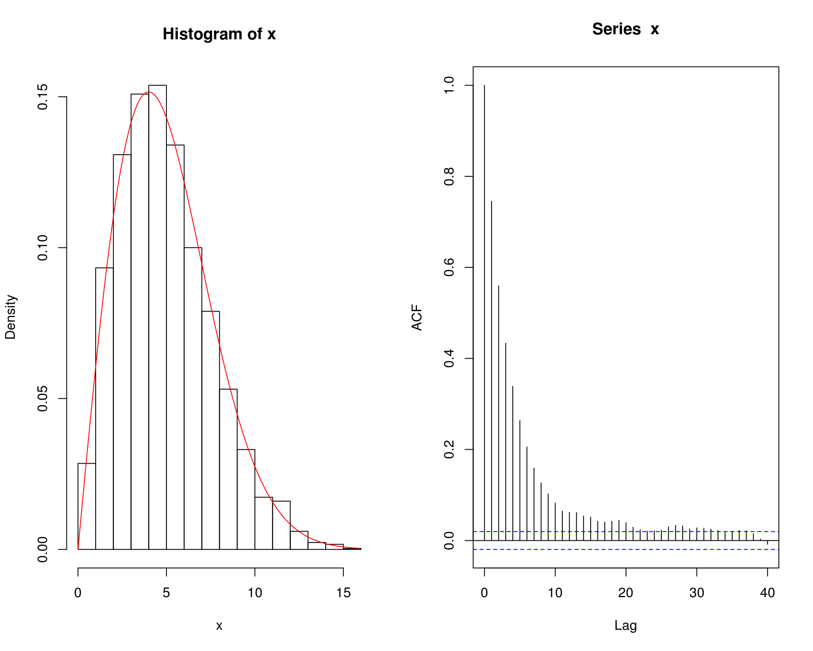
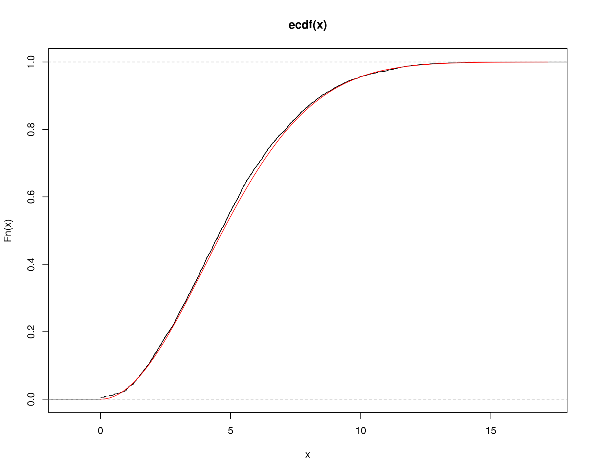
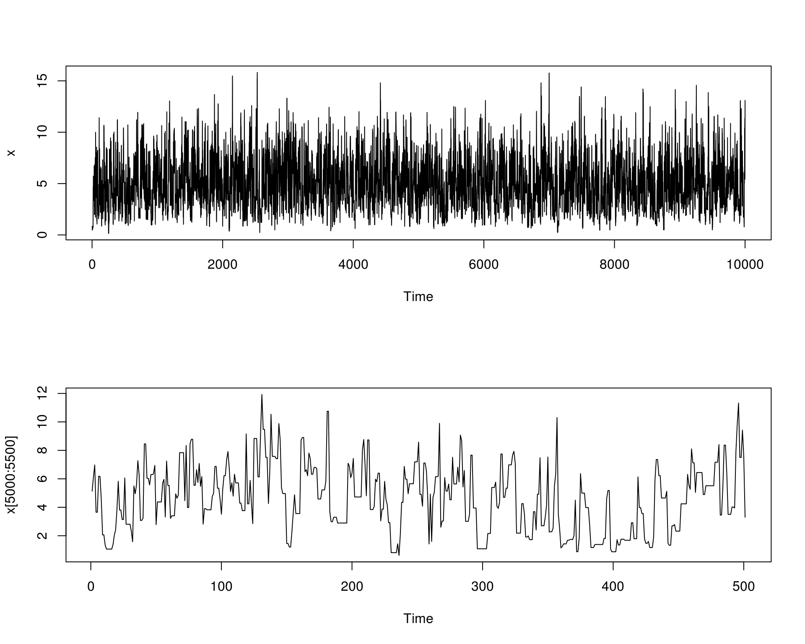
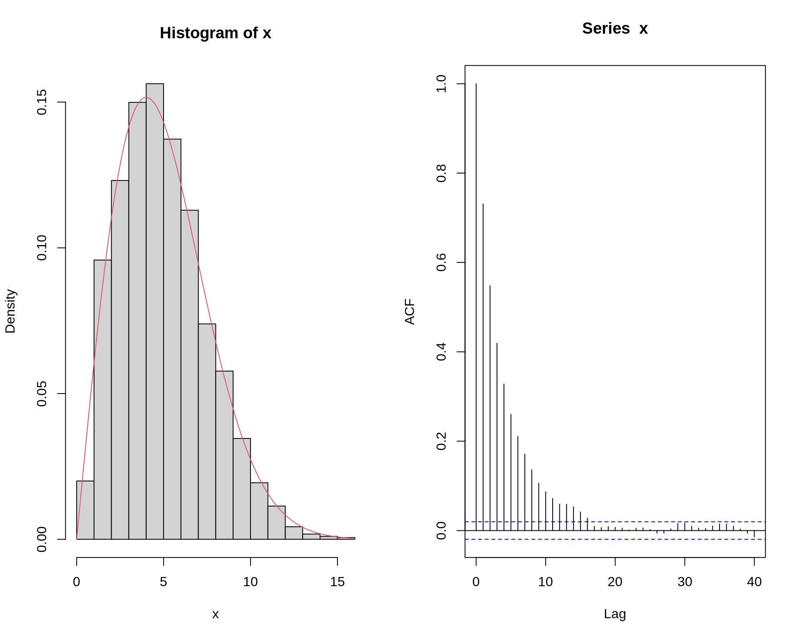
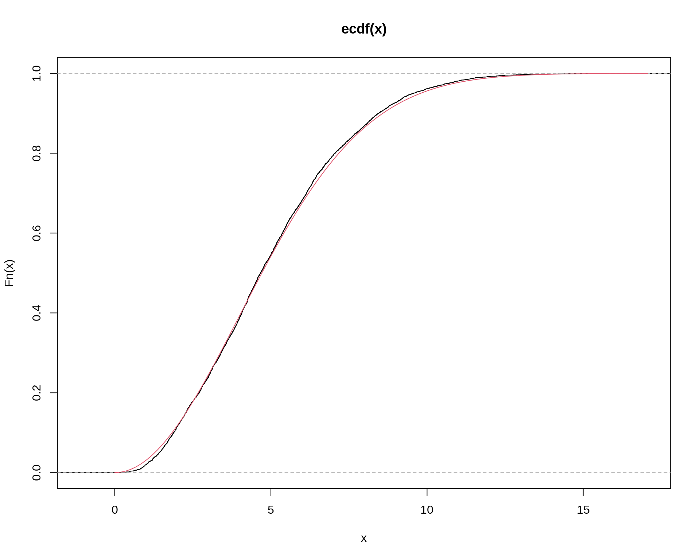

Métodos de Monte Carlo via Cadeias de Markov
Cadeias de Markov e algoritmo de Metropolis-Hastings
Fernando P. Mayer
1 Introdução
O termo “Monte Carlo via Cadeia de Markov” abrange uma grande gama de métodos introduzidos por Metropolis et al. (1953) e Hastings (1970) para integração de Monte Carlo, e que possuem algumas ideias em comum:
- Queremos amostrar de alguma função densidade de probabilidade complicada \(f\). A suposição aqui é que nós conseguimos calcular \(f\), mas não podemos amostrar dela.
- Sabemos que certos processos estocáticos chamados de cadeias de Markov convergem para uma distribuição estacionária (se certas condições forem satisfeitas). Simular desta cadeia de Markov por um período longo, eventualmente nos levará a uma amostra da distribuição estacionária da cadeia.
- Dada a forma funcional de \(f\), queremos construir uma cadeia de Markov que possui \(f\) como sua distribuição estacionária.
- Queremos amostrar valores da cadeia de Markov de forma que a sequência de valores \(\{x_n\}\), gerada pela cadeia, irá convergir em distribuição para a densidade \(f\).
Portanto, a ideia básica dos métodos de Monte Carlo via Cadeias de Markov (MCMC) para amostrar de \(f\) é construir uma cadeia de Markov com distribuição estacionária \(f\), e rodar essa cadeia por um longo período de tempo, até que ela convirja (aproximadamente) para sua distribuição estacionária.
Os métodos de MCMC servem basicamente para gerar valores de uma distribuição. No entanto, ao contrário dos métodos anteriores (e.g. aceitação-rejeição), os valores obtidos por MCMC são correlacionados.
Uma amostra com valores correlacionados não é desejável, mas mesmo assim, os métodos de MCMC são preferidos em situações mais complexas. O primeiro motivo é que, mesmo com valores correlacionados, é possível selecionar uma (sub) amostra de valores que não seja correlacionada. O segundo motivo é que as cadeias de Markov possuem diferentes propriedades de convergência, que podem ser exploradas para se obter distribuições propostas mais fáceis de tratar numericamente, quando os métodos mais gerais de amostragem por importância (por exemplo) não se aplicam diretamente.
Além disso, o conhecimento necessário da distribuição alvo que se quer gerar é mínimo, geralmente não é necessário saber a constante de integração por exemplo. Além disso, estes métodos via cadeias de Markov facilitam a resolução de problemas de alta dimensão, através de uma sequência de problemas menores que são mais fáceis de resolver (e.g. amostrador de Gibbs).
2 Cadeias de Markov
Uma cadeia de Markov é um processo estocático que evolui ao longo do tempo, passando por diversos estados. A sequência de estados é denotada pela coleção de valores \(\{X_t\}\), ou seja, é uma sequência de variáveis aleatórias dependentes \[ X_0, X_1, \ldots, X_t, \ldots \] onde a transição entre os estados é aleatória, segundo a regra \[ P[X_t | X_{t-1}, X_{t-2}, \ldots, X_0] = P[X_t | X_{t-1}] \] Essa relação significa que a distribuição de probabilidade de um processo no tempo \(t\), dado todos os outros valores da cadeia, é igual à distribuição de probabilidade condicionada apenas ao valor imediatamente anterior (essa propriedade é conhecida como propriedade de Markov).
Dessa forma, para determinar a sequência de valores que a cadeia pode assumir, podemos determinar a distribuição do próximo valor conhecendo apenas o valor anterior.
A coleção de estados que uma cadeia de Markov pode visitar é chamada de espaço de estados. A distribuição de probabilidade condicional, que determina se a cadeia se move de um estado para outro é chamada de kernel de transição ou matriz de transição, e pode ser denotada por \[ X_t | X_{t-1}, X_{t-2}, \ldots, X_0 \sim K(X_{t}, X_{t-1}) \] Por exemplo, uma cadeia de Markov do tipo random walk satisfaz \[ X_t = X_{t-1} + \epsilon \] onde \(\epsilon \sim \text{N}(0,1)\), independente de \(X_t\). portanto, o kernel de transição \(K(X_{t}, X_{t-1})\) corresponde a uma densidade \(\text{N}(X_{t-1},1)\).
Considere o seguinte exemplo com 3 estados e matriz de transição \(P\):
estados <- c("PR", "RS", "SC")
P <- matrix(c(.3, .3, .4, .4, .4, .2, .5, .3, .2),
byrow = TRUE, ncol = 3)
dimnames(P) <- list(estados, estados); P# PR RS SC
# PR 0.3 0.3 0.4
# RS 0.4 0.4 0.2
# SC 0.5 0.3 0.2rowSums(P)# PR RS SC
# 1 1 1colSums(P)# PR RS SC
# 1.2 1.0 0.8## DAG
diagram::plotmat(t(P), relsize = .75)
A interpretação das entradas da matriz é que, se estivermos no estado \(i\) no tempo \(t\), a probabilidade de mover para o estado \(j\) no tempo \(t+1\) será \[ P[X_{t+1} = j | X_t = i] = P_{ij} \] Por exemplo, se estamos no PR, a probabilidade de ir para SC é 0.4, ou seja, \(P[X_{t+1} = \text{SC}|X_t = \text{PR}] = P_{13} = 0.4\).
Suponha que inicialmente estamos em SC com probabilidade 1. Então a distribuição de probabilidade inicial para os três estados é \(\pi_0 = (0,0,1)\). Após uma iteração, a distribuição de probabilidade dos estados será então \[ \pi_1 = \pi_0 P = (0.5, 0.3, 0.2) \]
pi0 <- c(0, 0, 1)
(pi1 <- pi0 %*% P)# PR RS SC
# [1,] 0.5 0.3 0.2Após duas iterações, a probabilidade será
(pi2 <- pi1 %*% P)# PR RS SC
# [1,] 0.37 0.33 0.3Se continuarmos o processo acima \(n\) vezes, obtemos a distribuição de probabilidade para os estados após \(n\) iterações, que podemos escrever como \[ \pi_n = \pi_0 \underbrace{PPP \cdots P}_{n \text{ vezes}} = \pi_0 P^{(n)} \] Por exemplo, após 50 iterações, obtemos
library(expm) # potencia de matriz# Loading required package: Matrix#
# Attaching package: 'expm'# The following object is masked from 'package:Matrix':
#
# expmpi0 %*% (P %^% 50)# PR RS SC
# [1,] 0.3888889 0.3333333 0.2777778Para \(n \to \infty\) iterações, existe uma distribuição \(\pi_e\) tal que \[ ||\pi_e - \pi_n || \longrightarrow 0 \] onde \(||\cdot||\) é a distância total entre as duas densidades. Outra forma de definir esse fato é \[ \lim_{n \to \infty} \pi_n(i) = \pi_e(i) \] para todos os estados \(i\) no espaço de estados.
A distribuição \(\pi_e\) é chamada de distribuição estacionária de uma cadeia de Markov, e deve satisfazer a seguinte propriedade \[ \pi_e P = \pi_e \] Isso significa que, não importa onde a cadeia é iniciada (\(\pi_0\)), a distribuição \(\pi_n\) eventualmente chegará na distribuição estacionária \(\pi_e\).
No exemplo anterior, temos que
pi0 %*% (P %^% 5)# PR RS SC
# [1,] 0.38905 0.33333 0.27762pi0 %*% (P %^% 10)# PR RS SC
# [1,] 0.3888888 0.3333333 0.2777778pi0 %*% (P %^% 1e2)# PR RS SC
# [1,] 0.3888889 0.3333333 0.2777778pi0 %*% (P %^% 1e3)# PR RS SC
# [1,] 0.3888889 0.3333333 0.2777778pi0 %*% (P %^% 1e4)# PR RS SC
# [1,] 0.3888889 0.3333333 0.2777778ou seja, após poucas iterações (\(\sim 100\)) a distribuição estacionária já é atingida. Note portanto que
## Distribuição estacionária
(pi_e <- pi0 %*% (P %^% 1e4))# PR RS SC
# [1,] 0.3888889 0.3333333 0.2777778## Propriedade da distribuição estacionária
pi_e %*% P# PR RS SC
# [1,] 0.3888889 0.3333333 0.2777778A distribuição estacionária também pode ser aproximada a partir da frequência relativa de “visitas” em cada estado após muitas iterações. Para isso, inicia-se a cadeia em um estado qualquer, e os movimentos levarão aos outros estados a cada iteração, conforme estabelecido pela matriz de transição. O número de vezes que um estado é visitado a longo prazo (muitas iterações) levará a uma aproximação da distribuição estacionária, através das frequências relativas.
## Cria função para gerar cadeia
mc <- function(n, x1, P, states) {
x <- character(n)
x[1] <- x1
for(i in 2:n) {
x[i] <- sample(states, size = 1, prob = P[x[i - 1], ])
}
return(x)
}
## Tamanho da cadeia
N <- c(1e2, 1e3, 1e4, 1e5)
res <- lapply(N, function(x) {
mc(n = x, x1 = "SC", P = P, states = estados)
})
## Proporção relativa para cada tamanho de cadeia
t(sapply(res, function(x) prop.table(table(x))))# PR RS SC
# [1,] 0.42000 0.31000 0.27000
# [2,] 0.40300 0.30400 0.29300
# [3,] 0.38830 0.33940 0.27230
# [4,] 0.38807 0.33435 0.27758## Começando em outro estado
res <- lapply(N, function(x) {
mc(n = x, x1 = "RS", P = P, states = estados)
})
## Proporção relativa para cada tamanho de cadeia
t(sapply(res, function(x) prop.table(table(x))))# PR RS SC
# [1,] 0.39000 0.38000 0.23000
# [2,] 0.38600 0.33800 0.27600
# [3,] 0.39220 0.33760 0.27020
# [4,] 0.38788 0.33336 0.27876Existem ainda três suposições necessárias para que os teoremas limite sejam verdadeiros. A cadeia deve ser:
- Homogênea: as probabilidades de transição de um estado para outro são invariantes.
- Irredutível: cada estado pode ser atingido a partir de qualquer outro em um número finito de iterações.
- Aperiódica: não deve haver estados absorventes (i.e., estados em que, uma vez inseridos, não podem mais ser deixados).
Em geral, os algoritmos de MCMC satisfazem estas três condições.
No caso de cadeias recorrentes (ou aperiódicas), a distribuição estacionária também é a distribuição limite, no sentido de que a distribuição limite de \(\{X_t\}\) é \(\pi_e\) para qualquer valor de estado inicial \(X_0\). Esta propriedade é chamada de ergodicidade, e obviamente é de interesse direto nos métodos de MCMC, pois eventualmente atingiremos a distribuição alvo, que é a distribuição estacionária. Particularmente, para qualquer função \(h\) \[ \frac{1}{T} \sum_{t=1}^{T} h(X_t) \longrightarrow \text{E}_{\pi}[h(X)] \] ou seja, a Lei Forte dos Grandes Números, que é a base dos métodos de Monte Carlo também é aplicada nos métodos de MCMC. Essa definição também é conhecida como teorema ergódico. Isso também mostra que, embora a cadeia seja dependente por definição, a média aritmética dos valores da cadeia é um estimador consistente da média teórica.
A distribuição de probabilidade \(\pi = [\pi_0, \pi_1, \ldots]\) é chamada de distribuição limite de uma Cadeia de Markov \(\{X_n\}\) se \[ \pi_j = \lim_{n \to \infty} P(X_n = j | X_0 = i), \quad \forall \, i, j \in S \] e \[ \sum_{j \in S} \pi_j = 1 \] onde \(S\) é o conjunto de espaço de estados possíveis.
Quando a cadeia satisfaz as 3 condições acima, então a distribuição estacionária também é a distribuição limite, e sendo uma cadeia ergódica, a distribuição estacionária é única. Portanto, basta acharmos a distribuição estacionária para achar a distribuição limite.
Naturalmente podemos encontrar a distribuição estacionária da maneira como fizemos acima, ou seja, fazendo
\[ \pi_e = \lim_{n \to \infty} \pi_0 P^{(n)} \] e conferindo a relação \[ \pi_e P = \pi_e \]
No entanto, dado que a matriz de transição \(P\) é fixa e conhecida, então podemos obter a distribuição estacionária “teórica” por meio dos autovetores de \(P'\)
eigen(t(P))# eigen() decomposition
# $values
# [1] 1.0 -0.2 0.1
#
# $vectors
# [,1] [,2] [,3]
# [1,] -0.6674238 -7.071068e-01 0.2672612
# [2,] -0.5720776 -2.750209e-17 -0.8017837
# [3,] -0.4767313 7.071068e-01 0.5345225ev <- eigen(t(P))$vectors
## Distribuição estacionária
ev[, 1]/sum(ev[, 1])# [1] 0.3888889 0.3333333 0.2777778Para detalhes dessa relação veja este link.
Veja uma animação em http://setosa.io/ev/markov-chains.
3 Algoritmos de Metropolis-Hastings
Os algoritmos de Metropolis-Hastings (M-H) são uma classe de Métodos de Monte Carlo via Cadeias de Markov, incluindo casos especiais como o amostrador de Metropolis, o amostrador de Gibbs, o amostrador independente e o amostrador random walk.
A ideia principal é gerar uma Cadeia de Markov \(\{X_t | t = 0, 1, 2, \ldots\}\) de forma que sua distribuição estacionária seja a distribuição alvo. O algoritmo deve especificar, para um dado estado \(X_t\), como gerar o próximo estado \(X_{t+1}\). Em todos os algoritmos de M-H, existe um valor candidato \(Y\), gerado a partir de uma distribuição proposta \(g(\cdot|X_t)\) e se este valor candidato:
- é aceito, a cadeia se move para o estado \(Y\) no tempo \(t+1\) e \(X_{t+1}=Y\).
- não é aceito, a cadeia permanece no estado \(X_t\) e \(x_{t+1}=X_t\).
Note que, por construção, os valores gerados são dependentes (ou correlacionados).
A escolha para a distribuição proposta é bem flexível, mas a cadeia gerada por esta escolha deve satisfazer algumas condições de regularidade. A distribuição proposta deve ser escolhida de forma que a cadeia gerada vá, de fato, convergir para a distribuição estacionária - a distribuição alvo \(f\). As condições necessárias para a cadeia gerada são: irreducibilidade, recorrência positiva e aperiodicidade. Uma distribuição proposta com o mesmo suporte da distribuição alvo, geralmente irá satisfazer estas condições de regularidade.
3.1 Amostrador de Metropolis-Hastings
O algoritmo de Metropolis-Hastings gera uma cadeia de Markov \(\{X_0, X_1, \ldots\}\) conforme definido abaixo.
- Defina uma distribuição proposta \(g(\cdot|X_t)\)
- Defina um valor inicial \(X_0\), dentro do domínio de \(g\)
- Repita os seguintes passos até convergir para uma distribuição estacionária:
- Gere um valor candidato \(Y=X_{t+1}\) a partir de \(g(\cdot|X_t)\) (note que o valor candidato é dependente do valor anterior)
- Gere \(U\) de uma \(\text{U}(0,1)\)
- Calcule a taxa de aceitação \[ \alpha(X_t, Y) = \min \left( \frac{f(Y)g(X_t|Y)}{f(X_t)g(Y|X_t)}, 1 \right) \] Se \[ U \leq \alpha(X_t, Y) \] aceite \(Y\) e faça \(X_{t+1}=Y\); caso contrário faça \(X_{t+1}=X_t\)
Observações:
- Note que só precisamos conhecer o núcleo da densidade alvo \(f\), ou seja, não é necessário saber a constante de integração (ou de normalização), uma vez que, mesmo sem essa constante, a densidade de \(f\) será proporcional.
- Se a distribuição proposta for adequada, a “cadeia” de Metropolis-Hastings irá convergir para uma distribuição estacionária única \(\pi\).
- O algoritmo foi desenvolvido de forma que a distribuição estacionária da cadeia é de fato a distribuição alvo \(f\).
3.1.1 Exemplo (beta)
Considere o examplo de aulas anteriores sobre o algoritmo de aceitação-rejeição, onde deseja-se gerar valores de uma distribuição \(\text{Beta}(\alpha = 2.7, \beta = 6.3)\), com uma distribuição proposta \(\text{U}(0,1)\).
Para comparação, vamos gerar valores usando o método de aceitação-rejeição e agora pelo método de Metropolis-Hastings.
## Aceitação-rejeição --------------------------------------------------
## Define funções
f <- function(x) dbeta(x, 2.7, 6.3)
g <- function(x) dunif(x, 0, 1)
## Máximo M
(M <- optimize(f = function(x) {f(x)/g(x)},
interval = c(0, 1), maximum = TRUE)$objective)# [1] 2.669744curve(f, from = 0, to = 1, col = 4)
curve(g, from = 0, to = 1, add = TRUE, lty = 2)
curve(M * g(x), add = TRUE, lty = 2, lwd = 2)
legend("right", legend = c("f(x)", "g(x)", "M g(x)"),
lty = c(1, 2, 2), col = c(4, 1, 1), lwd = c(1, 1, 2), bty = "n")
## Simula com número fixo
N <- 1e5
## Amostra da proposta U(0,1)
y <- runif(N)
## Amostra u também de U(0,1)
u <- runif(N)
## Calcula a razão
r <- f(y)/(M * g(y))
## x serão os valores de y onde u < r
x.ar <- y[u < r]
## Aceitados
ua <- u[u < r]Pelo algoritmo de Metropolis-Hastings, a simulação seria:
## Metropolis-Hastings -------------------------------------------------
## Simula com número fixo
N <- 1e5
x <- numeric(N)
x[1] <- runif(1)
k <- 0 # para contar quantos foram aceitos
for (i in 2:N) {
y <- runif(1)
num <- f(y) * g(x[i - 1])
den <- f(x[i - 1]) * g(y)
alpha <- num/den
u <- runif(1)
if (u <= alpha) {
x[i] <- y
} else {
x[i] <- x[i - 1]
k <- k + 1 # contagem doa aceitos
}
}Comparando as duas abordagens:
## Taxa de aceitação - AR
1/M # teórica# [1] 0.3745677length(ua)/N# [1] 0.37523## Taxa de aceitação - MH
k/N# [1] 0.5426## Compara amostras com acumulada teórica
par(mfrow = c(1, 2))
plot(ecdf(x.ar), main = "Aceitação-rejeição")
curve(pbeta(x, 2.7, 6.3), add = TRUE, from = 0, to = 1, col = 2)
plot(ecdf(x), main = "Metropolis-Hastings")
curve(pbeta(x, 2.7, 6.3), add = TRUE, from = 0, to = 1, col = 2)
legend("right", legend = c("Empírica", "Teórica"),
lty = 1, col = 1:2, bty = "n")
## Compara autocorrelação
acf(x.ar, main = "Aceitação-rejeição")
acf(x, main = "Metropolis-Hastings")
## Compara as duas cadeias
par(mfrow = c(2, 1))
plot.ts(x.ar[5000:5200], main = "Aceitação-rejeição")
plot.ts(x[5000:5200], main = "Metropolis-Hastings")
par(mfrow = c(1, 1))Veja como fica uma animação com o método em funcionamento:
3.1.2 Exemplo (Rayleigh)
Usando o algoritmo de Metropolis-Hastings, gere uma amostra de uma distribuição \(\text{Rayleigh}(\sigma)\), que possui a densidade
\[ f(x) = \frac{x}{\sigma^2} e^{-x^2/2\sigma^2}, \quad x \geq 0, \sigma > 0 \]
A distribuição Rayleigh é utilizada para modelar tempo de vida sujeito à rápido decaimento. A moda da distribuição é em \(\sigma\) e \(\text{E}(X) = \sigma\sqrt{\pi/2}\), \(\text{Var}(X) = \sigma^2(4-\pi)/2\).
Como distribuição proposta, considere uma \(\chi^2\) com \(X_t\) graus de liberdade.
## Define funções
f <- function(x, sigma) {
(x / sigma^2) * exp(-x^2 / (2 * sigma^2)) * (x >= 0) * (sigma > 0)
}
g <- function(x, df) dchisq(x, df)
## Visualiza _algumas_ propostas (pois os graus de liberdade da
## qui-quadrado irá depender de cada valor sorteado em cada iteração).
## NOTE que os graus de liberdade da qui-quadrado não precisam ser
## inteiros
curve(f(x, 4), from = 0, to = 20, ylim = c(0, .3), lwd = 2)
curve(g(x, 1), from = 0, to = 20, add = TRUE, col = 2)
curve(g(x, 2.5), from = 0, to = 20, add = TRUE, col = 3)
curve(g(x, 3.2), from = 0, to = 20, add = TRUE, col = 4)
curve(g(x, 4), from = 0, to = 20, add = TRUE, col = 5)
legend("topright",
legend = c("Rayleigh(4)", expression(chi^2 ~ (1)),
expression(chi^2 ~ (2.5)), expression(chi^2 ~ (3.2)),
expression(chi^2 ~ (4))),
lty = 1, col = 1:5)
O algoritmo de Metropolis-Hastings nesse caso ficaria assim:
- Defina \(g(\cdot|X)\) como uma densidade de \(\chi^2(X)\)
- Gere \(X_0\) de \(\chi^2(1)\)
- Repita para \(i=2, \ldots, N\):
- Gere \(Y = X_{t+1}\) de \(\chi^2(X_t)\)
- Gere \(U\) de \(\text{U}(0,1)\)
- Calcule a taxa de aceitação \[ \alpha(X_t, Y) = \min \left( \frac{f(Y)g(X_t|Y)}{f(X_t)g(Y|X_t)}, 1 \right) \] onde \(f\) é a \(\text{Rayleigh}(\sigma)\), \(g(X_t|Y)\) é \(\chi^2(Y)\) avaliada no ponto \(X_t\), e \(g(Y|X_t)\) é a \(\chi^2(X_t)\) avaliada no ponto \(Y\).
- Se \[ U \leq \alpha(X_t, Y) \] aceite \(Y\) e faça \(X_{t+1}=Y\); caso contrário faça \(X_{t+1}=X_t\)
Portanto, para gerar valores de uma \(\text{Rayleigh}\) com \(\sigma=4\), uma implementação do algoritmo seria:
N <- 1e4
## Rayleigh(4)
sigma <- 4
x <- numeric(N)
x[1] <- rchisq(1, df = 1)
k <- 0 # para contar quantos foram aceitos
for (i in 2:N) {
y <- rchisq(1, df = x[i - 1])
num <- f(y, sigma) * g(x[i - 1], df = y)
den <- f(x[i - 1], sigma) * g(y, df = x[i - 1])
alpha <- num/den
u <- runif(1)
if (u <= alpha) {
x[i] <- y
} else {
x[i] <- x[i - 1]
k <- k + 1 # contagem dos aceitos
}
}## Taxa de aceitação
k/N# [1] 0.4008## Traço da cadeia
par(mfrow = c(2, 1))
plot.ts(x)
plot.ts(x[5000:5500])par(mfrow = c(1, 1))
## Histograma da distribuição e correlação entre as observações
par(mfrow = c(1, 2))
hist(x, freq = FALSE)
ind <- seq(0, max(x), length.out = 100)
lines(ind, (f(ind, sigma)), col = 2)
acf(x)
par(mfrow = c(1, 1))
## Compara acumulada empírica com teórica
## Acumulada teórica da Rayleigh
Fx <- function(x, sigma) {
1 - exp(-x^2/(2 * sigma^2)) * (x >= 0) * (sigma > 0)
}
plot(ecdf(x))
curve(Fx(x, 4), add = TRUE, col = 2, from = 0)
Referências
Hastings, W. K. 1970. “Monte Carlo Sampling Methods Using Markov Chains and Their Applications.” Biometrika 57 (1): 97–109. https://academic.oup.com/biomet/article-abstract/57/1/97/284580.
Metropolis, Nicholas, Arianna W. Rosenbluth, Marshall N. Rosenbluth, Augusta H. Teller, and Edward Teller. 1953. “Equation of state calculations by fast computing machines.” The Journal of Chemical Physics 21 (6): 1087–92. https://doi.org/10.1063/1.1699114.

Este conteúdo está disponível por meio da Licença Creative Commons 4.0